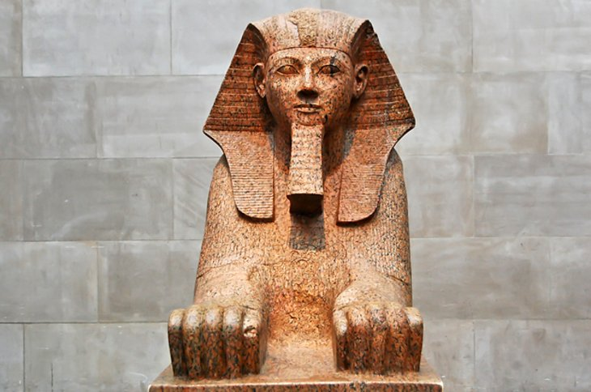
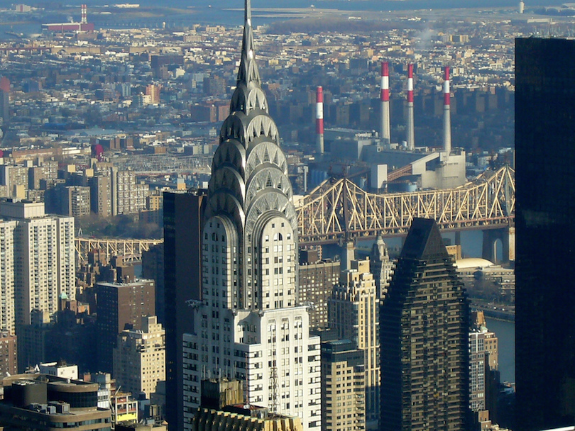

America's most iconic sight, the Statue of Liberty is at the top of every first-time visitor's list of
things to do in New York.
It was France's gift to America. Built in 1886, it remains a world symbol of freedom and is one of the
top attractions in America.
It is one of the world's largest statues, standing just under 152 feet tall from the base to the torch,
and weighing approximately 450,000 pounds.
Central park
A walk, peddle, or carriage ride through the crisscrossing pathways of Central Park is a must-do on
anyone's New York City itinerary.
In winter, you can even lace up your skates and glide across Wollman Rink. This huge park in the city
center, a half-mile wide
and 2.5 miles long, is one of the things that makes New York such a beautiful and livable city.
Rockefeller
When it comes to New York attractions, Rockefeller Center is on almost all tourist's itineraries. This
vast entertainment
and shopping complex in the middle of Manhattan is home to NBC-TV and other media, but the centerpiece
is the 70-story
30 Rockefeller Plaza, an Art Deco skyscraper that offers awesome views over Manhattan from the famous
Top of the Rock Observation Deck.

Metropolitan Art of Museum
The Metropolitan Museum of Art, or the Met, as it is commonly known, was founded in 1870, and is one of
the most famous
museums in the United States. The permanent collection of The Met contains more than two million works
of art, spanning
a period of 5,000 years
Empire State building
The Empire State Building is one of New York's most famous landmark buildings and key tourist
attractions. The 381-meter-tall,
102-storey building was the tallest in the world until the 1 World Trade Center tower rose higher, 41
years later. Topped
with a mooring mast for airships, the Empire State Building immediately became a landmark and a symbol
for NYC when it opened in 1931.
Brookyln bridge
The Brooklyn Bridge, with its Gothic-shaped arches and suspension cables, is one of the city's most
recognizable landmarks
and has inspired generations of poets, songwriters, and painters. This historic bridge, spanning the
East River from Manhattan
to Brooklyn, was completed in 1883 and was the world's first steel suspension bridge.
New York Public libary
The New York Public Library's main branch was designed by architects, Carrere & Hastings, in the Beaux
Arts style.
The library, with its impressive rooms, is a prominent city attraction that has been featured in many
movies
and TV shows over the years.

Chrysler building
You can view the Chrysler Building from several spots around the city, including a glorious spot in
Gramercy Park.
But nothing tops exploring the elegant lobby, complete with an interior sourced from countries all
around the world.